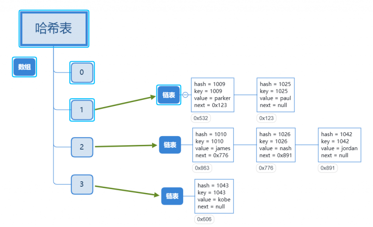
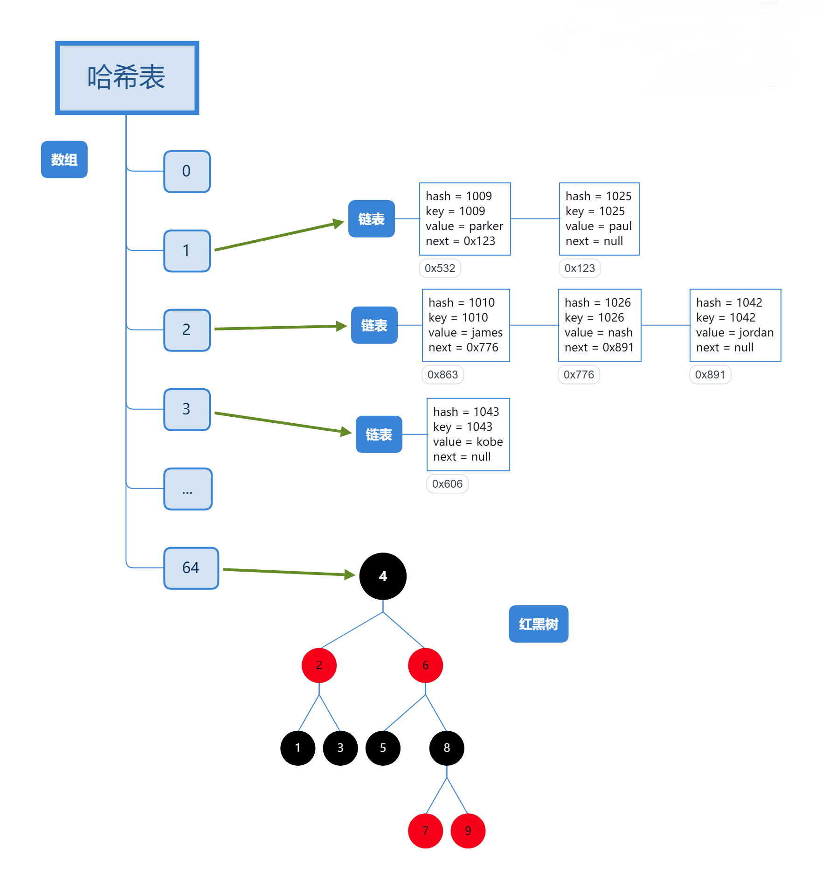
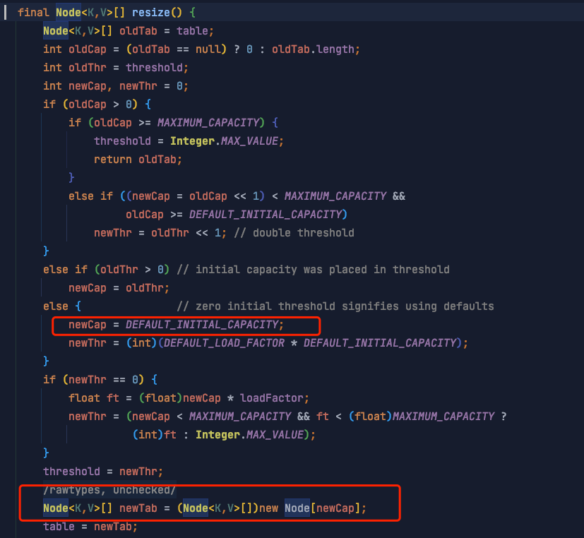
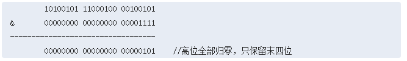
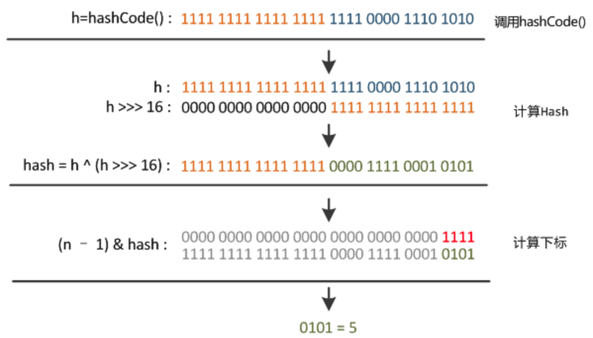
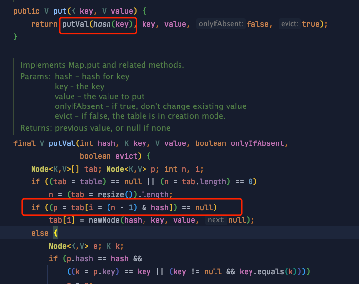
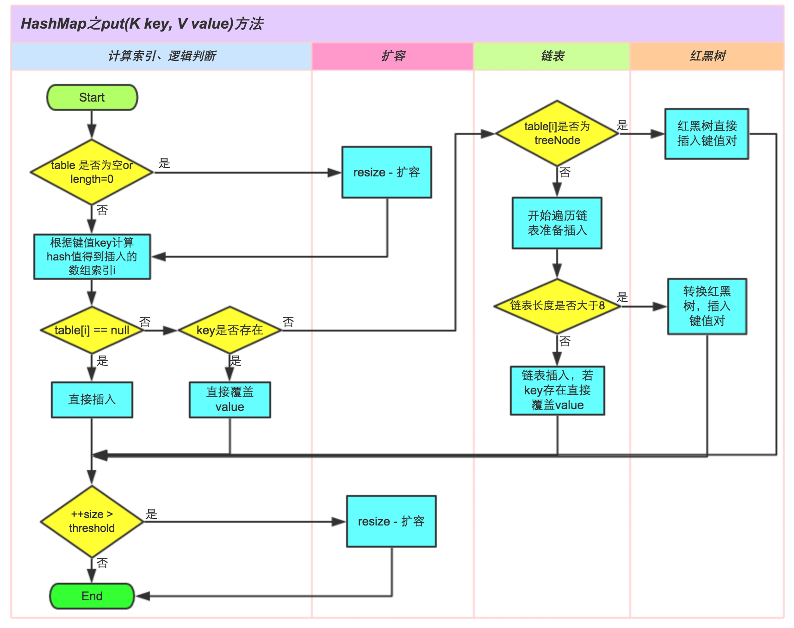
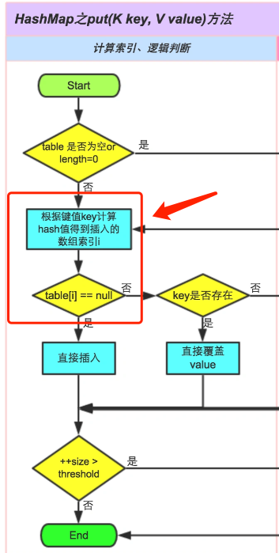
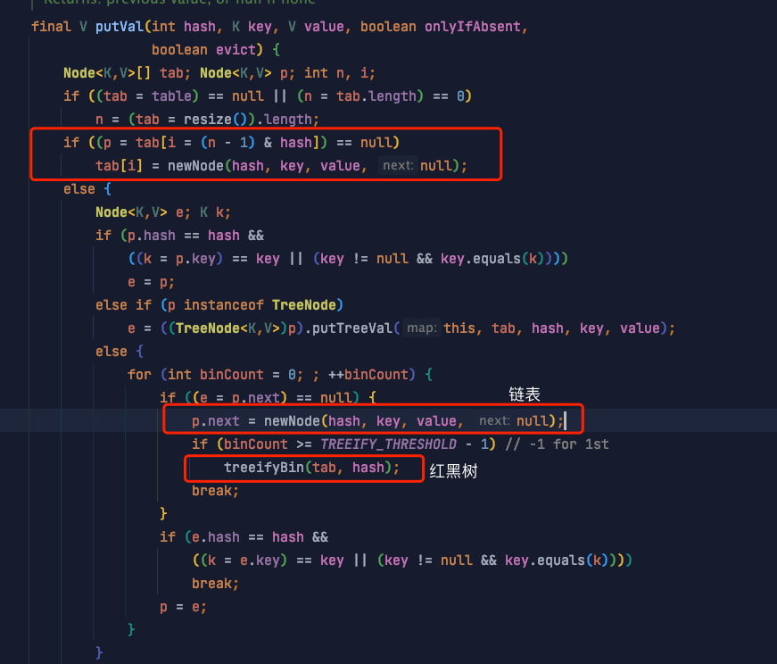

HashMap
特点
KV 结构，K、V 都允许 null 值
线程不安全，运行速度快，存取速度快
HashMap 是非线程安全的，可以用 Collections 的 synchronizedMap 方法使 HashMap 具有线程安全的能力，或者使用 ConcurrentHashMap。
如果用 Collections.synchronizedMap 则与使用 Hashtable 类似，两者性能相近，但是 synchrnizedMap 可以用 null 作为 key 和 value。
数据结构
jdk1.7 是数组+链表的结构

jdk1.8 是数组+链表+红黑树

数组长度定义为多少？
HashMap 类中有一个非常重要的字段，就是 Node[] table，即哈希桶数组。上两图中的数组即为 Node 数组。以下为部分源码：
static class Node<K,V> implements Map.Entry<K,V> {
final int hash; //用来定位数组索引位置
final K key;
V value;
Node<K,V> next; //链表的下一个 node
Node(int hash, K key, V value, Node<K,V> next) { ... }
public final K getKey(){ ... }
public final V getValue() { ... }
public final String toString() { ... }
public final int hashCode() { ... }
public final V setValue(V newValue) { ... }
public final boolean equals(Object o) { ... }
}
又根据 resize() 方法源码注释得知，Node 数组是在初始化或扩容时定义
Initializes or doubles table size. If null, allocates in accord with initial capacity target held in field threshold. Otherwise, because we are using power-of-two expansion, the elements from each bin must either stay at same index, or move with a power of two offset in the new table.
具体看一下 resize() 方法对应源码：

可见初始化时默认 Node 数组大小为 DEFAULT_INITIAL_CAPACITY （16）
static final int DEFAULT_INITIAL_CAPACITY = 1 << 4; // aka 16
这个值必须为 2 的幂次方。
数组何时扩容？
通过阅读 put 方法源码得知当 ++size > threshold 条件为真为将进行数组扩容。
final V putVal(int hash, K key, V value, boolean onlyIfAbsent,
boolean evict) {
Node<K,V>[] tab; Node<K,V> p; int n, i;
if ((tab = table) == null || (n = tab.length) == 0)
n = (tab = resize()).length;
if ((p = tab[i = (n - 1) & hash]) == null)
tab[i] = newNode(hash, key, value, null);
else {
Node<K,V> e; K k;
... 省略
}
++modCount;
if (++size > threshold)
resize();
afterNodeInsertion(evict);
return null;
}
size 是什么？(HashMap 中实际存在的键值对数量）
The number of key-value mappings contained in this map
threshold 是什么？（扩容阈值）
The next size value at which to resize (capacity * load factor). (The javadoc description is true upon serialization. Additionally, if the table array has not been allocated, this field holds the initial array capacity, or zero signifying DEFAULT_INITIAL_CAPACITY.)
threshold = capacity * load factor
capacity 容量 默认 16
load factor 装载因子 默认 0.75
如果按照默认值算的话，threshold 为 12，结合前面的知识，根据条件 ++size > threshold ：如果 HashMap 初始容量为 16，则当实际存在的键值对到达 12 时，就进行扩容。
装载因子为什么是 0.75?
装载因子越大，说明空闲位置越少，冲突越多，散列表的性能会下降。所以如果装载因子是 1，显然不合适。
那如果是 0.5 呢 ? 如果是 0.5 ， 那么每次达到容量的一半就进行扩容，默认容量是 16， 达到 8 就扩容成 32，达到 16 就扩容成 64， 最终使用空间和未使用空间的差值会逐渐增加，空间利用率低下，也不合适。
那么应该定成多少，又是为什么 ？
As a general rule, the default load factor (.75) offers a good tradeoff between time and space costs. Higher values decrease the space overhead but increase the lookup cost (reflected in most of the operations of the {@code HashMap} class, including {@code get} and {@code put}). The expected number of entries in the map and its load factor should be taken into account when setting its initial capacity, so as to minimize the number of rehash operations. If the initial capacity is greater than the maximum number of entries divided by the load factor, no rehash operations will ever occur.
根据上面的源码注释，0.75 只是一个在时间和空间上折中的选择 ( tradeoff between time and space costs )
什么时候链表转红黑树 ？
为什么要转红黑树？
在 jdk1.8 之后，HashMap 初始化的时候也是线性表+链表，只是当拉链过长，则会严重影响 HashMap 的性能 。
链表的长度超过一定**数量**之后，会把链表转换成红黑树来增加代码运行时的性能。
在源码中用TREEIFY_THRESHOLD这个参数来指定这个数量。
/**
* The bin count threshold for using a tree rather than list for a
* bin. Bins are converted to trees when adding an element to a
* bin with at least this many nodes. The value must be greater
* than 2 and should be at least 8 to mesh with assumptions in
* tree removal about conversion back to plain bins upon
* shrinkage.
*/
static final int TREEIFY_THRESHOLD = 8;
/**
* The bin count threshold for untreeifying a (split) bin during a
* resize operation. Should be less than TREEIFY_THRESHOLD, and at
* most 6 to mesh with shrinkage detection under removal.
*/
static final int UNTREEIFY_THRESHOLD = 6;
可见这个值为 8 ，当链表长度太长（默认超过 8）时，链表就转换为红黑树，利用红黑树快速增删改查的特点提高 HashMap 的性能
我们注意到上面源码注释中还有一个值 UNTREEIFY_THRESHOLD，它是一个红黑树到链表的还原阈值，当扩容时，桶中元素个数小于这个值，就会把树形的桶元素 还原（切分）为链表结构。把时间复杂度从 O（n）变成 O（logN）提高了效率）
为什么是 8 和 6 ？
如果选择 6 和 8（如果链表小于等于 6 树还原转为链表，大于等于 8 转为树），中间有个差值 7 可以有效防止链表和树频繁转换。假设一下，如果设计成链表个数超过 8 则链表转换成树结构，链表个数小于 8 则树结构转换成链表，如果一个 HashMap 不停的插入、删除元素，链表个数在 8 左右徘徊，就会频繁的发生树转链表、链表转树，效率会很低。
那 8 是怎么来的？
* Because TreeNodes are about twice the size of regular nodes, we
* use them only when bins contain enough nodes to warrant use
* (see TREEIFY_THRESHOLD). And when they become too small (due to
* removal or resizing) they are converted back to plain bins. In
* usages with well-distributed user hashCodes, tree bins are
* rarely used. Ideally, under random hashCodes, the frequency of
* nodes in bins follows a Poisson distribution
* (http://en.wikipedia.org/wiki/Poisson_distribution) with a
* parameter of about 0.5 on average for the default resizing
* threshold of 0.75, although with a large variance because of
* resizing granularity. Ignoring variance, the expected
* occurrences of list size k are (exp(-0.5) * pow(0.5, k) /
* factorial(k)). The first values are:
*
* 0: 0.60653066
* 1: 0.30326533
* 2: 0.07581633
* 3: 0.01263606
* 4: 0.00157952
* 5: 0.00015795
* 6: 0.00001316
* 7: 0.00000094
* 8: 0.00000006
* more: less than 1 in ten million
我们用白话文翻译一下，大概意思就是说：
因为树结构是链表结构的两倍大小左右，所以当节点足够多的时候我们才会转换为树结构存储，而当它节点足够少的时候，我们又从树结构转换为链表结构。当使用良好的哈希码时，树结构是很少使用到的，理想的情况下，在随机的哈希码下，节点在链表中出现的频率符合泊松分布，在数组调整阈值为 0.75 的时候，该泊松分布的平均参数约为 0.5，因为数组调整的阈值大小对平均参数有很大影响。如果忽略这个影响，列表长度 k 出现的次数按照泊松分布依次为：
0: 0.60653066； 1: 0.30326533； 2: 0.07581633； 3: 0.01263606； 4: 0.00157952； 5: 0.00015795； 6: 0.00001316； 7: 0.00000094； 8: 0.00000006； 更大：不足千万分之一；
因为长度出现 8 的概率已经足够足够小了，所以说，按照泊松分布，大部分的 HashMap 其实还是数组+链表结果，不会转换为红黑树。当链表长度为 8 的时候，概率的计算，就是把 8 带入到公式中，因为默认调整阈值是 0.75 的时候，平均值是 0.5，所以，求得的概率即为链表长度为 8 的概率。
结论：容器中节点分布在 hash 桶中的频率遵循泊松分布，桶的长度超过 8 的概率非常非常小。所以作者应该是根据概率统计而选择了 8 作为阀值。
有关泊松分布可以参考 这里 大概了解一下。
hash 算法
我们先来说说 hash 算法的一般实现：
大数变小数-->取模
让结果的规律性不明显--> 异或、改变原始数据、移位
碰撞是存在的，主要是看解决碰撞的方案
java 中常用的 hashCode 算法：
Object 类的 hashCode。返回对象的经过处理后的内存地址。由于每个对象的内存地址都不一样，所以哈希码也不一样，这是个 native 方法。取决于 JVM 的内部设计，一般是某种 C 地址的偏移。
String 类的 hashCode, 根据 String 类包含的字符串的内容，根据一种特殊的算法返回哈希码，只要字符串的内容相同，返回的哈希码也相同。
Integer 等包装类，返回的哈希码就是 Integer 对象里所包含的那个整数的值，例如 Integer i1 = new Integer(100), i1.hashCode() 的值就是 100。由此可见，两个一样大小的 Integer 对象，返回的哈希码也一样。
int、char 这样的基础类，它们不需要 hashCode, 如果需要存储时，将进行自动装箱操作，计算方法同上。
如何确定哈希桶数组索引位置？
无论增加、删除、查找键值对，定位到哈希桶数组的位置都是很关键的第一步。
首先想到的就是把 hash 值对数组长度取模运算，这样一来，元素的分布相对来说是比较均匀的。但是，模运算的消耗还是比较大的，在 HashMap 中是这样做的：调用下面的代码来计算该对象应该保存在 table 数组的哪个索引处。
先看下 JDK1.7 的实现
final int hash(Object k) {
int h = hashSeed;
if (0 != h && k instanceof String) {
return sun.misc.Hashing.stringHash32((String) k);
}
// 先取 key 的 hashCode 再和 hashSeed 进行异或运算
h ^= k.hashCode();
// This function ensures that hashCodes that differ only by
// constant multiples at each bit position have a bounded
// number of collisions (approximately 8 at default load factor).
h ^= (h >>> 20) ^ (h >>> 12);
return h ^ (h >>> 7) ^ (h >>> 4);
}
static int indexFor(int h, int length) {
return h & (length-1);
}
这个方法非常巧妙，获得 hash 值后，它通过h & (table.length -1)来得到该对象的保存位，而 HashMap 底层 Node 数组的长度总是 2 的 n 次方，这是 HashMap 在速度上的优化。当 length 总是 2 的 n 次方时，h & (length-1) 运算等价于对 length 取模，也就是h % length，但是 & 比% 具有更高的效率。
数组长度减 1 正好相当于一个“低位掩码”。“与”操作的结果就是散列值的高位全部归零，只保留低位值，用来做数组下标访问。
以初始长度 16 为例，16-1=15。2 进制表示是 00000000 00000000 00001111。和某散列值做“与”操作如下，结果就是截取了最低的四位值。

h & (length-1) 当且仅当 length（即 capacity) 是 2 的整倍数的时候才等于h % length, 从这个角度也说明了 capacity 为什么一定要用 2 的整次幂。
在 JDK1.8 的实现中，优化了 hash 算法，是通过 hashCode() 的高 16 位异或低 16 位实现的
static final int hash(Object key) {
int h;
// h = key.hashCode() 为第一步 取 hashCode 值
// h ^ (h >>> 16) 为第二步 高位参与运算
return (key == null) ? 0 : (h = key.hashCode()) ^ (h >>> 16);
}
final V putVal(int hash, K key, V value, boolean onlyIfAbsent,
boolean evict) {
Node<K,V>[] tab; Node<K,V> p; int n, i;
if ((tab = table) == null || (n = tab.length) == 0)
n = (tab = resize()).length;
if ((p = tab[i = (n - 1) & hash]) == null) //第三步 取模运算
tab[i] = newNode(hash, key, value, null);
else {
...
JDK 中为什么不直接用 key.hashCode() 获取哈希值，而是使用 (h = key.hashCode()) ^ (h >>> 16) ？
我们通过上文了解了 HashMap 如何计算出数组索引位置，但其实有一个问题，就是即使我的散列值分布再松散，要是只取最后几位的话，碰撞也会很严重。更要命的是如果散列本身做得不好，分布上成等差数列的漏洞，恰好使最后几个低位呈现规律性重复，就无比蛋疼。
这时候“扰动函数”的价值就体现出来了

右位移 16 位，正好是 32bit 的一半，自己的高半区和低半区做异或，就是为了混合原始哈希码的高位和低位，以此来加大低位的随机性。而且混合后的低位掺杂了高位的部分特征，这样高位的信息也被变相保留下来。这么做可以在数组 table 的 length 比较小的时候，也能保证考虑到高低 Bit 都参与到 Hash 的计算中，同时不会有太大的开销。（JDK 7 做了 4 次右移，估计是边际效应的原因，JDK8 就只做了一次右移）
(h = key.hashCode()) ^ (h >>> 16) 这样写有点类似重写了 hashCode，确保得出的数足够的随机，因为进行 hash 计算的时候 确保它的数足够的分散，以便于计算数组下标的时候存放的值足够分散。
方法的具体调用过程，可以参考 put 方法：

如何解决 hash 冲突？
解决哈希冲突的方法一般有：开放地址法、链地址法（拉链法）、再哈希法、建立公共溢出区等方法。
HashMap 是用拉链法解决的 Hash 冲突问题。HashMap 的数据结构 ：jdk1.7 是数组+链表的结构 ，jdk1.8 是数组+链表+红黑树。
正是为了解决 Hash 冲突以及平衡查询、插入等操作的效率 HashMap 的作者才将 HashMap 设计成这种数据结构。
下面通过 put 方法的流程来了解一下 hash 冲突

Hash 冲突 发生在了这里：

从代码上看是这里：

当没有 hash 冲突的时候就直接 newNode 了，如果发生了冲突，即通过 hash 计算出的 Node 数组位置上已经有元素了，那么就要执行下面的流程了：
有可能转成链表
有可能转成红黑树
从第一个 else 条件开始就是 hashMap 解决 hash 冲突的过程。也就是所谓的“拉链法”
需要注意的点：
HashMap 采用的链表法的方式，链表是单向链表
当发生 hash 冲突，hashMap 的桶中形成链表的时候，新的元素插入到该链表的时候，jdk1.7 使用的是“头插法” 即新元素在链表头，而 jdk1.8 使用的“尾插法” 即新元素在链表尾。
重写 equals() 时，为什么 必须重写 hashCode() ？
我们知道当往 HashMap put 相同 key 的元素的时候，会用新 value 替换老 value，那么 HashMap 是如何判断 key 是相同的呢？
if (p.hash == hash && ((k = p.key) == key || (key != null && key.equals(k))))
根据源码，是通过比较 hashcode 和 equals ，所以说当对一个对象重写 equals 时，也要重写 hashCode 或者反过来。不然可能会对像 HashMap 这种容器的判断产生影响 。 试想如果你的对象没有正确重写这两个方法，那么装在容器中一定会有问题。
HashMap 线程不安全
结论：在多线程使用场景中，应该尽量避免使用线程不安全的 HashMap，而使用线程安全的 ConcurrentHashMap
在多线程环境下使用 HashMap 可能产生环链（死循环）问题，当然是在 jdk1.7 版本，jdk1.8 由于使用了“尾插法”就避免了这个问题。在使用 jdk1.7 的情况下，是 put 过程中的 resize 方法在调用 transfer 方法的时候导致的环链。
举例说明一下：
public class HashMapInfiniteLoop {
private static HashMap<Integer,String> map = new HashMap<Integer,String>(2，0.75f);
public static void main(String[] args) {
map.put(5， "C");
new Thread("Thread1") {
public void run() {
map.put(7, "B");
System.out.println(map);
};
}.start();
new Thread("Thread2") {
public void run() {
map.put(3, "A);
System.out.println(map);
};
}.start();
}
}
其中，map 初始化为一个长度为 2 的数组，loadFactor=0.75，threshold=2*0.75=1，也就是说当 put 第二个 key 的时候，map 就需要进行 resize。下面代码是 jdk1.7 的
void resize(int newCapacity) { //传入新的容量
Entry[] oldTable = table; //引用扩容前的 Entry 数组
int oldCapacity = oldTable.length;
if (oldCapacity == MAXIMUM_CAPACITY) { //扩容前的数组大小如果已经达到最大 (2^30) 了
threshold = Integer.MAX_VALUE; //修改阈值为 int 的最大值 (2^31-1)，这样以后就不会扩容了
return;
}
Entry[] newTable = new Entry[newCapacity]; //初始化一个新的 Entry 数组
transfer(newTable); //！！将数据转移到新的 Entry 数组里
table = newTable; //HashMap 的 table 属性引用新的 Entry 数组
threshold = (int)(newCapacity * loadFactor);//修改阈值
}
void transfer(Entry[] newTable) {
Entry[] src = table; //src 引用了旧的 Entry 数组
int newCapacity = newTable.length;
for (int j = 0; j < src.length; j++) { //遍历旧的 Entry 数组
Entry<K,V> e = src[j]; //取得旧 Entry 数组的每个元素
if (e != null) {
src[j] = null;//释放旧 Entry 数组的对象引用（for 循环后，旧的 Entry 数组不再引用任何对象）
do {
Entry<K,V> next = e.next;
int i = indexFor(e.hash, newCapacity); //！！重新计算每个元素在数组中的位置
e.next = newTable[i]; //标记 [1]
newTable[i] = e; //将元素放在数组上
e = next; //访问下一个 Entry 链上的元素
} while (e != null);
}
}
通过设置断点让线程 1 和线程 2 同时 debug 到 transfer 方法的首行。注意此时两个线程已经成功添加数据。放开 thread1 的断点至 transfer 方法的“Entry next = e.next;” 这一行；然后放开线程 2 的断点，让线程 2 进行完 resize。结果如下图。
注意，Thread1 的 e 指向了 key(3)，而 next 指向了 key(7)，其在线程二 rehash 后，指向了线程二重组后的链表。
线程一被调度回来执行，先是执行 newTalbe[i] = e， 然后是 e = next，导致了 e 指向了 key(7)，而下一次循环的 next = e.next 导致了 next 指向了 key(3)。
e.next = newTable[i] 导致 key(3).next 指向了 key(7)。注意：此时的 key(7).next 已经指向了 key(3)， 环形链表就这样出现了。
于是，当我们用线程一调用 map.get(11) 时，悲剧就出现了——Infinite Loop。
HashMap 有并发问题，并不单单指环链问题，而是在数据结构的设计上就没有考虑并发环境。HashMap 的设计目标是简洁高效，没有采取任何措施保证 put、remove 操作的多线程安全。put 方法的操作对象要么是整个散列表，要么是某个哈希桶里的链表或红黑树，而这些过程都没有采取措施保证多线程安全。在这个复杂的逻辑过程中，任何一个线程在这个过程中改动了散列表的结构，都有可能造成另一个线程的操作失败。
HashMap 是线程不安全的，读写方法都不安全吗？
put 这种写操作肯定是线程不安全的，应该不用说。那 get 这种读呢？
通过上面对 JDK7 死循环的分析知道
如果在读之前有多线程的写操作已经造成了“ Infinite Loop” ，那么再进行 get 的话，会出现问题，在种情况下读也不安全。
但如果在读之前并没有多线程写操作，那么多线程读是没有问题的。
总结：同时并发读写，多线程 put 后可能导致 get 死循环 (CPU 100%)，只是并发读没问题。
怎么解决？
如果遇到并发场景还是要使用并发容器，如 Collections.synchronizedMap 或 ConcurrentHashMap
不考虑内存限制，HashMap 可以无限存储数据吗？
不可以，HashMap 是有最大容量上限的。我们还是来看下源码注释：
/**
* The maximum capacity, used if a higher value is implicitly specified
* by either of the constructors with arguments.
* MUST be a power of two <= 1<<30.
*/
static final int MAXIMUM_CAPACITY = 1 << 30;
如果构造函数传入的值大于 MAXIMUM_CAPACITY ，那么替换成该数 MAXIMUM_CAPACITY （1 << 30） 即 2 的 30 次方。
为什么是 1 << 30？ 1 <<31 不行吗？
注意看这个值是 int 类型的。我们知道 int 的极限最大值 Integer._MAX_VALUE 是 2 的 31 次方减 1，即、_2147483647，如果 1 << 30 改为 1 << 31 ，由于 int 是有符号数，这个值将为 -2147483648，而且 hashMap 的容量都是 2 的整数次幂，也就只能是 2 的 30 次方了。
然而这并不是 HashMap 的最大容量
看一源码关于扩容 resize 这部分的代码：
final Node<K,V>[] resize() {
Node<K,V>[] oldTab = table;
int oldCap = (oldTab == null) ? 0 : oldTab.length;
int oldThr = threshold;
int newCap, newThr = 0;
if (oldCap > 0) {
if (oldCap >= MAXIMUM_CAPACITY) {
threshold = Integer.MAX_VALUE;
return oldTab;
}
else if ((newCap = oldCap << 1) < MAXIMUM_CAPACITY &&
oldCap >= DEFAULT_INITIAL_CAPACITY)
newThr = oldThr << 1; // double threshold
}
else if (oldThr > 0) // initial capacity was placed in threshold
newCap = oldThr;
else { // zero initial threshold signifies using defaults
newCap = DEFAULT_INITIAL_CAPACITY;
newThr = (int)(DEFAULT_LOAD_FACTOR * DEFAULT_INITIAL_CAPACITY);
}
if (newThr == 0) {
float ft = (float)newCap * loadFactor;
newThr = (newCap < MAXIMUM_CAPACITY && ft < (float)MAXIMUM_CAPACITY ?
(int)ft : Integer.MAX_VALUE);
}
threshold = newThr;
@SuppressWarnings({"rawtypes","unchecked"})
Node<K,V>[] newTab = (Node<K,V>[])new Node[newCap];
table = newTab;
通过分析源码得到 Integer.MAX_VALUE 是 Node 数组理论上的最大值 。
这只是 Node 数组的最大 容量，由于 HashMap 在 hash 冲突后的链表和红黑树的数据结构，如果之前有大量数据发生了冲突，数据在链表或红黑树上，那么整个 HashMap 的最大容量可能就不是上面的最大容量。
所以 HashMap 的最大容量总结如下：
准确来说有可能是无限大，但因为内存限制和使用场景的关系可能性极小。
一般来说是 Integer.MAX
不过一般不会有这种场景的，Integer.MAX 20 多亿，一般的内存扛不住的，不信你在自己的电脑上试试，内存小的都试不出来。
HashMap<Integer, Byte> map = new HashMap<>(Integer.MAX_VALUE, 0.75F);
for (int i = 0; i < Integer.MAX_VALUE; i++) {
map.put(i, null);
}
System.out.println(map.size());
当 HashMap 到达容量上限后占用的内存大小，已经很大了，所以一般情况下是内存溢出。
另外也没有那么多数据让你全部放到容器中，就算有，也可以分而治之。whatever，了解容器的边界是一个好的习惯。